Každý update, jedním klikem.
Every update, one click away.
Domovská obrazovka ukazuje nejnovější verze Minecraftu s jejich oficiálními obrázky. Vybereš verzi, klikneš na Hrát a launcher si instanci s Fabricem, optimalizacemi a Justice Modem připraví sám.
The home screen shows the newest Minecraft versions with their official art. Pick one, hit Play, and the launcher sets up an instance with Fabric, optimizations and Justice Mod by itself.


Každá hra ve vlastní instanci.
Every game in its own instance.
Vanilla, Fabric, Quilt, Forge i NeoForge vedle sebe. Každá karta ukazuje, na jakém světě nebo serveru jsi naposledy hrál.
Vanilla, Fabric, Quilt, Forge and NeoForge side by side. Every card shows the world or server you last played on.
- Modrinth a CurseForge v jednomModrinth and CurseForge in one
Hledání, závislosti se stáhnou samy, import .mrpack, CurseForge a .dawnpack.
Search, dependencies download themselves, import .mrpack, CurseForge and .dawnpack.
- Hotové balíčkyReady-made packs
Cinematic, SMP, PvP a PvP 1.8.9 — optimalizované, se Simple Voice Chatem.
Cinematic, SMP, PvP and PvP 1.8.9 — optimised, with Simple Voice Chat.
- Víc FPS bez práceMore FPS, no effort
Chytré nastavení RAM a Javy, Sodium, vysoká priorita a analýza pádů.
Smart RAM and Java settings, Sodium, high priority and crash analysis.
- Uprav si hoMake it yours
5 motivů (Justice, Midnight, Aurora, Sakura, Mono), vlastní barva, obrázek na pozadí, pořadí panelu i ikony instancí.
5 themes (Justice, Midnight, Aurora, Sakura, Mono), your own colour, a background picture, sidebar order and instance icons.
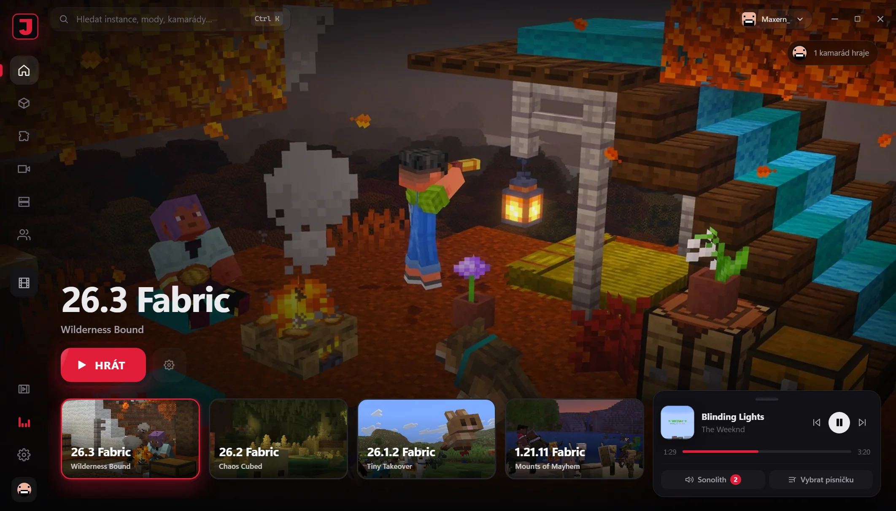
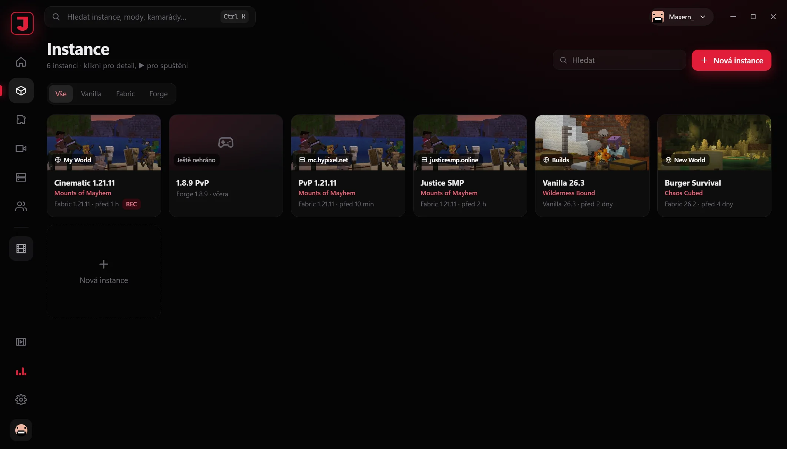
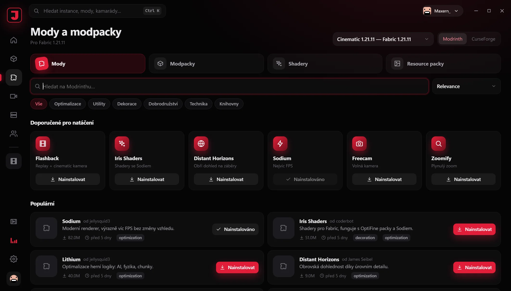
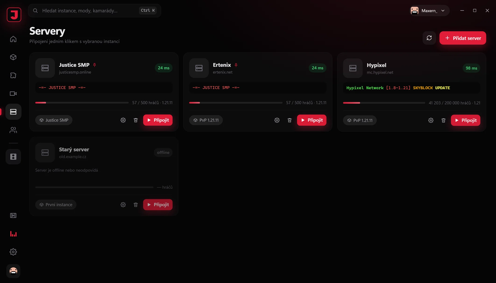
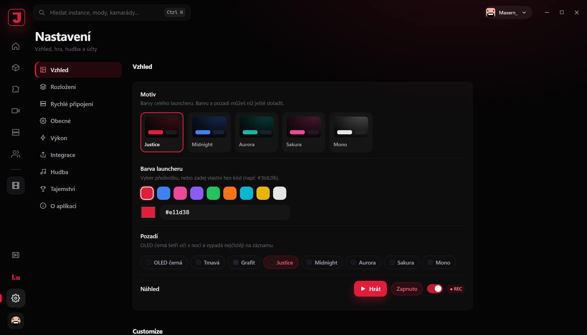
Režim natáčení
Recording mode
Flashback, čisté nastavení hry pro záběry a OBS, které začne nahrávat samo.
Flashback, clean game settings for footage and OBS that starts recording by itself.
Účty Microsoft
Microsoft accounts
Přihlášení přes Microsoft, víc účtů, skiny a capy s 3D náhledem.
Microsoft sign-in, multiple accounts, skins and capes with a 3D preview.
Samo se aktualizuje
Updates itself
Podepsané aktualizace jedním klikem, zálohy a snapshoty světů.
Signed one-click updates, backups and world snapshots.
8 tajemství
8 secrets
V launcheru je schovaných osm easter eggů. Nastavení ti napoví, kolik jich zbývá.
Eight easter eggs are hidden in the launcher. Settings hint at how many are left.
Ty nejlepší mody, už v balíčku.
The best mods, already bundled.
Každá nová instance dostane rovnou balíček optimalizací a Justice Mod. Další mody přidáš z Modrinthu a CurseForge jedním klikem.
Every new instance gets the optimization pack and Justice Mod right away. Add more from Modrinth and CurseForge in one click.
Vždy aktuální
Always up to date
Hlídáme nejnovější optimalizační mody a launcher ti je sám aktualizuje.
We follow the newest performance mods and the launcher updates them for you.
Jedno menu
One menu
Pravý Shift otevře Justice menu: moduly, HUD, klávesy i motivy na jednom místě.
Right Shift opens the Justice menu: modules, HUD, keybinds and themes in one place.
Vyber si
Your choice
Co nechceš, vypneš. Vlastní mody přetáhneš rovnou do okna instance.
Turn off what you don't want. Drop your own mods straight into the instance.
Modpacky, co se samy spraví.
Modpacks that fix themselves.
Poradce MaxPack ti sestaví balíček na míru, průvodce opravou vyřeší konflikty a duplicity, a všechno se stahuje na pozadí jako v CurseForge.
The MaxPack helper builds a pack for you, the repair wizard fixes conflicts and duplicates, and everything downloads in the background like CurseForge.
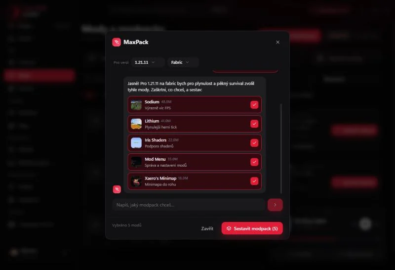
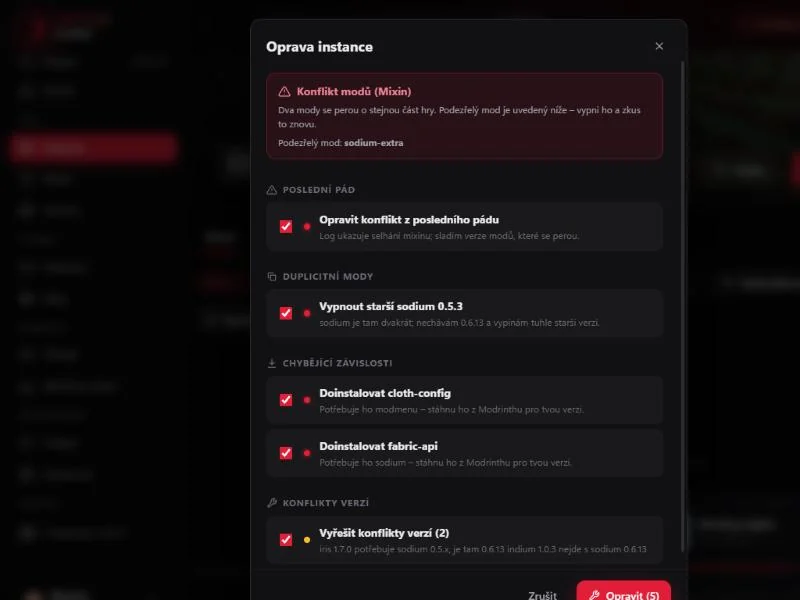
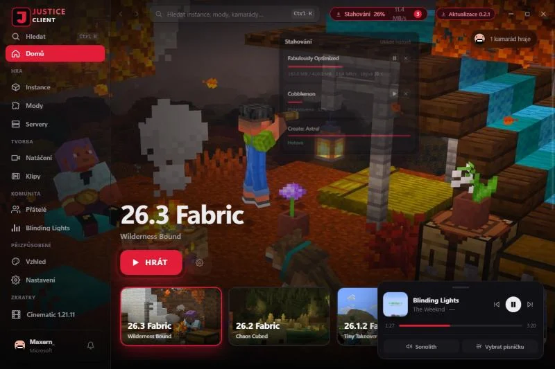
MaxPack poradce
MaxPack helper
Napíšeš, jaký modpack chceš, a bot navrhne reálné mody z Modrinthu. Zdarma, bez API klíče.
Describe the modpack you want and the bot suggests real Modrinth mods. Free, no API key.
Oprava jedním klikem
One-click repair
Projde duplicity, chybějící závislosti, konflikty verzí i poslední pád — s náhledem a vrácením.
Checks duplicates, missing dependencies, version conflicts and the last crash — with preview and undo.
Stahování na pozadí
Background downloads
Fronta nahoře v liště s rychlostí a ETA, pauza i zrušení — launcher jde mezitím používat dál.
A top-bar queue with speed and ETA, pause and cancel — keep using the launcher meanwhile.
Pláště a mazlíčci.
Capes and pets.
28 plášťů a 12 mazlíčků, které vidí i ostatní hráči Justice Clientu přímo ve hře. Knihovna skinů navíc umí ukládat víc skinů a přepínat mezi nimi jedním klikem.
28 capes and 12 pets that other Justice Client players see in-game. The skin library saves several skins and switches between them in one click.
- 28 plášťů28 capes
Od ohnivých přes galaxii po drahokamy — vykreslí se i na elytrách.
From fiery to galaxy to gems — rendered on elytra too.
- 12 mazlíčků12 pets
Liška, dráček, axolotl a další tě doprovází ve hře.
A fox, a dragon, an axolotl and more follow you in-game.
- Knihovna skinůSkin library
Ulož si víc skinů a přepínej mezi nimi — funguje i pro offline účty.
Save several skins and switch between them — works for offline accounts too.
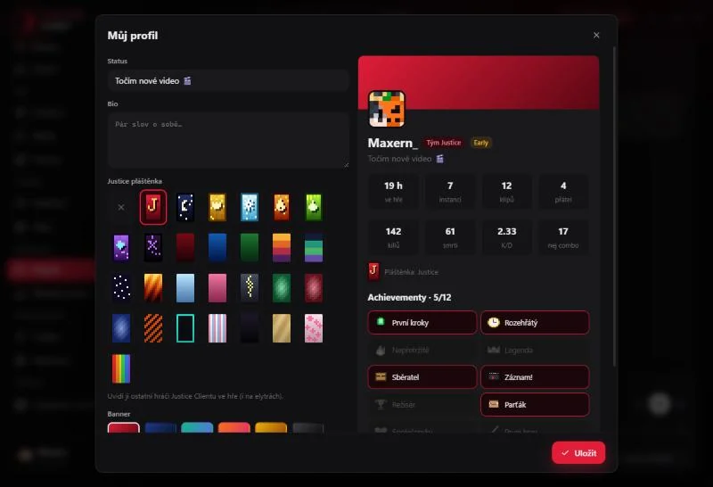
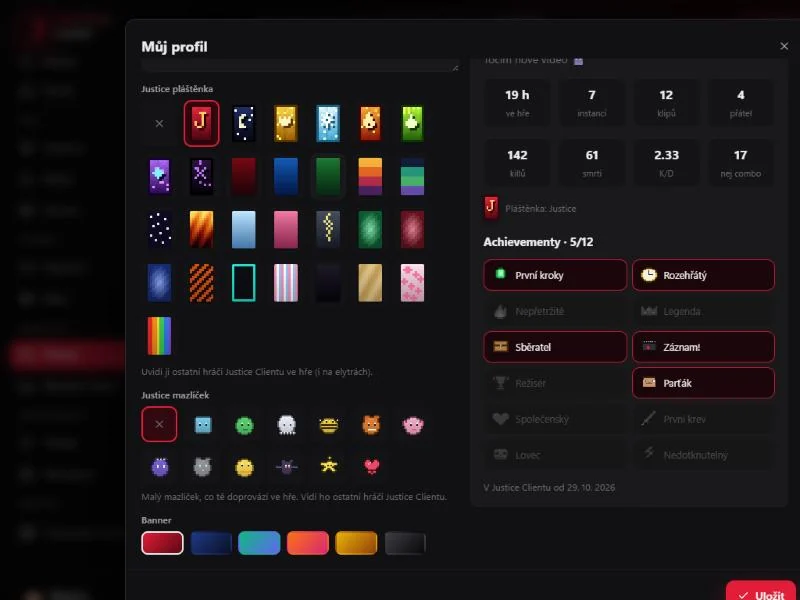
Míň sekání, když na tom záleží.
Less stutter, when it matters.
Měřeno vestavěným benchmarkem v Justice Modu: postava běží novým terénem a dohled se mění mezi 8 a 20 chunky, takže se pořád načítá svět. Přesně tam se Minecraft seká nejvíc.
Measured with the benchmark built into Justice Mod: the player runs through new terrain while the render distance switches between 8 and 20 chunks, so the world keeps loading. That's where Minecraft stutters the most.
Nejhorší zaseknutí
Worst hitch
Zaseknutí přes 50 ms za 30 s
Hitches over 50 ms per 30 s
0,1 % nejhorších snímků
0.1% worst frames
Měřeno v říjnu 2026 na PC autora, 4 × 4 úseky po 30 s ve dvou dnech měření, vždy na čisté kopii světa. Vanilla = Fabric bez optimalizací. Výsledky se liší podle hardwaru.
Measured in October 2026 on the author's PC, 4 × 4 runs of 30 s over two sessions, each on a fresh copy of the world. Vanilla = Fabric without optimizations. Results vary by hardware.
Tvoje hudba, aniž bys odešel ze hry.
Your music, without leaving the game.
Launcher vidí, co hraje v Sonolithu, Spotify nebo prohlížeči. Obal písničky, posuv a ovládání máš v přehrávači, který si přetáhneš, kam chceš.
The launcher sees what's playing in Sonolith, Spotify or a browser. The cover, seek bar and controls sit in a player you can drag anywhere.
- Přehrávač v launcheruPlayer in the launcher
Obal, název, posuv, pauza, další a předchozí písnička. Žádné propojování, prostě to funguje.
Cover, title, seeking, pause, next and previous. Nothing to link, it just works.
- A ve hře takyAnd in game too
Modul Now Playing v Justice Modu ukáže písničku v HUD. End pauza, Page Down / Page Up další a předchozí.
The Now Playing module in Justice Mod shows the song in your HUD. End pauses, Page Down / Page Up skip.
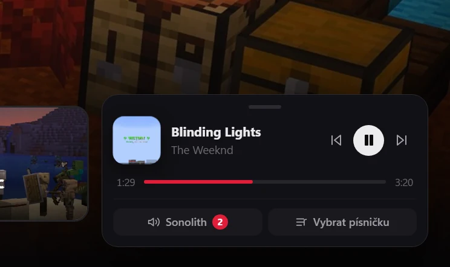
Vlastní menu přímo ve hře.
Your own menu right in the game.
Stiskni Pravý Shift a zapni, co potřebuješ. HUD si rozložíš myší, uložíš jako preset a obarvíš motivem. Launcher ho do Fabric, NeoForge i Forge instancí přidá sám — a jedním přepínačem ho zase vypneš.
Press Right Shift and turn on what you need. Drag the HUD around, save it as a preset and colour it with a theme. The launcher adds it to Fabric, NeoForge and Forge instances by itself — and one switch turns it off again.
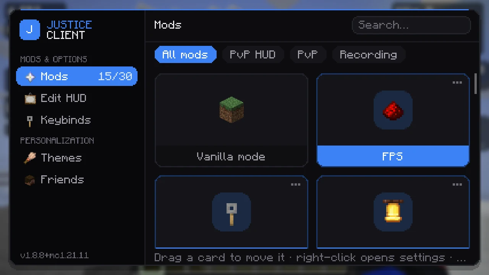
Menu modulůModule menu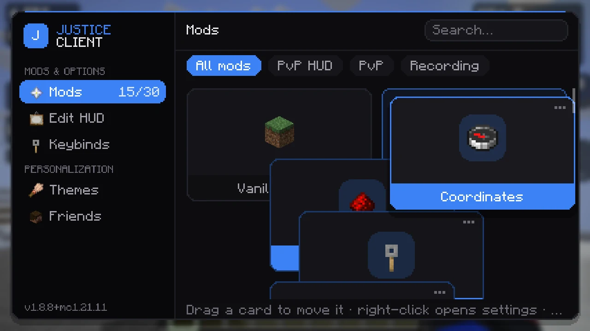
Karty si přetáhneš, kam chcešDrag cards wherever you like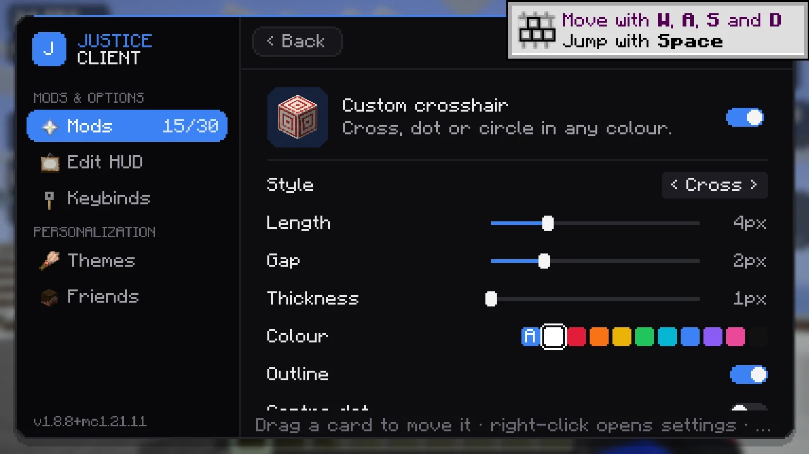
Nastavení každého moduluSettings for every module1.21.101.21.1126.126.226.3 · Fabric, NeoForge, ForgeHraj s kámoši bez serveru.
Play with friends, no server needed.
Přidej si kamarády podle Minecraft jména, piš si s nimi v launcheru i ve hře a pozvi je do svého singleplayer světa jedním klikem.
Add friends by their Minecraft name, chat in the launcher and in game, and invite them into your singleplayer world with one click.
- Chat všudeChat everywhere
V launcheru, v hlavním menu i ve hře (klávesa U) s upozorněním na nové zprávy.
In the launcher, on the title screen and in game (U key) with toasts for new messages.
- Sdílení světů jako EssentialWorld sharing like Essential
Svět běží u tebe na počítači, kamarádi se připojí přes naši relay — žádné porty ani hosting.
The world runs on your PC, friends join through our relay — no ports, no hosting.
- Posílej klipy a modpackySend clips and modpacks
Modpack se kamarádovi nainstaluje jedním tlačítkem přímo z chatu.
A modpack installs for your friend with one button right from the chat.
- Profil, odznaky a achievementyProfile, badges and achievements
Status, statistiky odehraného času a co zrovna kdo hraje.
Status, playtime stats and what everyone is playing right now.
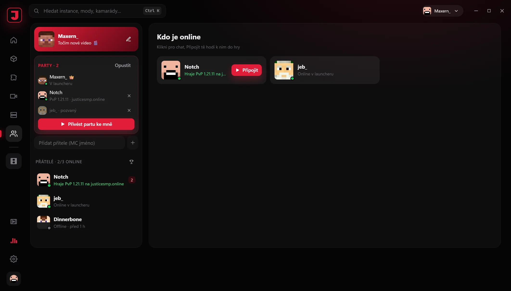
Ten moment už neuteče.
Never miss that moment again.
Justice Clips nahrává poslední vteřiny hry do paměti. Když se stane něco epického, zmáčkneš klávesu a klip je na disku — jako Medal, ale přímo v launcheru.
Justice Clips keeps the last seconds of gameplay in memory. When something epic happens, press a key and the clip is on disk — like Medal, but built into the launcher.
Nahrává jen když hraješRecords only while you play
Posledních až 5 minut v 60 FPS, uložené podle hry do složek.
Up to the last 5 minutes at 60 FPS, sorted into folders by game.
- Skoro žádný dopad na FPSAlmost no FPS impact
Kóduje grafika — na Windows NVIDIA NVENC, na Linuxu gpu-screen-recorder.
The GPU does the encoding — NVIDIA NVENC on Windows, gpu-screen-recorder on Linux.
- Zvuk na samostatných stopáchAudio on separate tracks
Hra a mikrofon zvlášť, takže je ve střižně snadno vyvážíš.
Game and mic separately, so they're easy to balance when editing.
- Pošli ho kámošůmSend it to friends
Klip sdílíš do chatu jedním klikem, bez nahrávání na YouTube.
Share a clip to chat with one click, no YouTube upload needed.
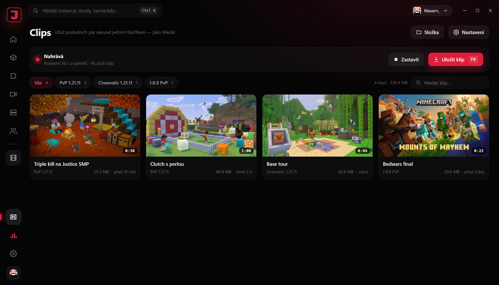
Připoj se jedním klikem.
Join with one click.
Justice SMP a Ertenix máš v launcheru nahoře — vidíš počet hráčů a hned hraješ.
Justice SMP and Ertenix sit at the top of the launcher — see who's online and jump straight in.
Justice SMP
SMP komunita kolem kanálu maxernMC — survival, eventy a natáčení videí.
The SMP community around the maxernMC channel — survival, events and video shoots.
Ertenix
Český survival server s vlastní ekonomikou, questy, aukcemi a týmy.
A Czech survival server with its own economy, quests, auctions and teams.
Stáhni si Justice Client
Get Justice Client
Zdarma. Aktualizace pak chodí samy přímo v launcheru.
Free. Updates arrive by themselves inside the launcher.
Linux
Balíček .deb, AppImage nebo balíček pro Arch.
A .deb package, an AppImage or an Arch package.
Windows ukáže modré varování? Je to normální — takhle ho obejdešWindows shows a blue warning? That's normal — here's how to get past it
Vydavatel: Neznámý vydavatelPublisher: Unknown publisher
Časté otázky
Common questions
Je Justice Client zdarma?Is Justice Client free?
Potřebuju koupený Minecraft?Do I need to own Minecraft?
Je to bezpečné? Proč Windows ukazuje varování?Is it safe? Why does Windows show a warning?
Můžu hrát na jakémkoliv serveru, třeba Hypixelu?Can I play on any server, like Hypixel?
Na jakých verzích funguje Justice Mod?Which versions does Justice Mod support?
Jak funguje sdílení světa? Musím otevírat porty?How does world sharing work? Do I need to open ports?
Můžu si přenést modpack z jiného launcheru?Can I bring a modpack from another launcher?
.mrpack, CurseForge zip i .dawnpack..mrpack, CurseForge zip and .dawnpack.